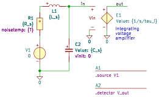

"A1_source_noise"
.source V1
.detector V_out
C2 in 0 C value={C_s} vinit=0
E1 out 0 in 0 E value={1/s/tau_i}
L1 1 in L value={L_s} iinit=0
R1 1 2 R value={R_s} noisetemp={T} noiseflow=0 dcvar=0 dcvarlot=0
V1 2 0 V value=0 noise=0 dc=0 dcvar=0
.end
Go to A1_source_noise_index
SLiCAP: Symbolic Linear Circuit Analysis Program, Version 4.0.10 © 2009-2025 SLiCAP development team
For documentation, examples, support, updates and courses please visit: analog-electronics.tudelft.nl
Last project update: 2026-06-14 12:14:15